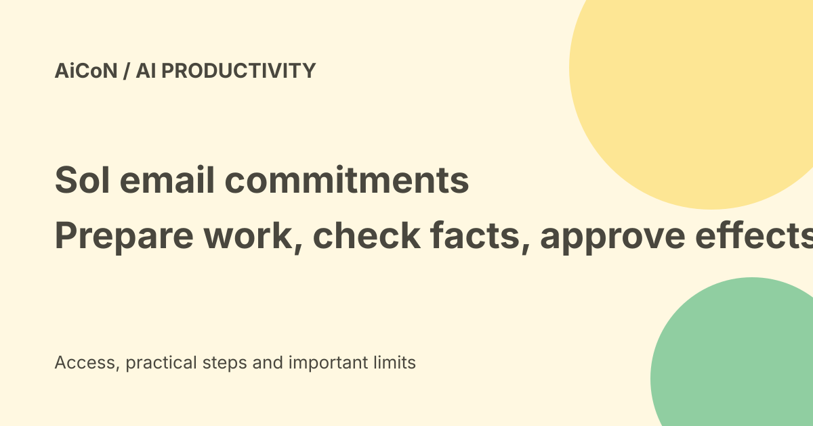

Sol: email commitments, approval gates and access limits
Sol says it finds commitments expressed in Gmail, prepares the work behind them and returns for approval. The official launch page points to selective access and a waitlist at hellosol.app. Treat this as a product description, not proof that every promised task will be finished correctly.

What is an email commitment?
A commitment is something you have said you will do, such as send analysis, share a proposal or arrange a meeting. Sol's premise is to start from that existing promise rather than waiting for another prompt.
Finding a promise and understanding its scope are different jobs. A passing mention, quoted text or another person's request can be mistaken for a task if context is read badly.
What work does Sol describe?
The official launch page lists research, documents, presentations, meeting coordination and draft replies. It describes gathering context and preparing the work implied by the commitment.
A draft presentation is not the same as an approved presentation sent to the right audience. Judge the supporting facts and finished output, not only the fact that something was created.
Where the approval gate matters
The announcement says the user retains approval before anything final is sent, scheduled or shared. That distinction is central to evaluating a product with inbox access.
Check the recipient, words, attachment, meeting time and audience together. Do not let a convenient summary hide the action being approved.
Access route today
The checked official launch page says selective access and a waitlist at hellosol.app, with general access planned soon. It does not give a firm general-availability date.
Use the product site's current access instructions. This guide did not join the waitlist, connect an inbox or receive an account.
Price and India verdict
No exact public subscription price or universal free allowance was established in the checked launch and product pages. Funding is money invested in the company, not the price paid by a user.
No firm India-access date or India-specific checkout total was established from those sources. The earlier US-first wording should not become a dated India promise without a current official country policy.
Google Workspace is not every account
The launch description starts with Gmail and mentions documents and presentations. Do not assume an Outlook inbox, every company account or every calendar integration is supported because it is an email assistant.
Confirm the actual permissions requested by the account-connection screen and your organisation's policy before linking work email.
What the homepage says about privacy
The homepage says Sol does not share, sell or train on the user's data, that email does not train its or its providers' models, and that data is encrypted in transit and at rest.
It also claims CASA Tier 2 verification. These are vendor statements from the product page, not an independent security audit performed for this guide.
Questions to settle before connection
Ask what data is read, where it is kept, who can access it, how long it remains and how revocation works. Check whether documents and attachments are included and which providers process them.
Encryption is useful, but it does not answer every question about retention or access. A familiar product description is not permission to connect a confidential client inbox.
The homepage inbox is a demo
The page shows sample people, threads and an invoice as product illustrations. Those examples are not private customer records inspected by AiCoN and not evidence of real task success.
Look for your own observable outcomes during an approved trial: a correct draft, a supported calculation, a sensible meeting proposal and no unintended send.
Funding and announcement context
The official announcement dated 22 September 2026 names four million dollars from General Catalyst, Nexus Venture Partners, DeVC, Peercheque and Kunal Shah. It names founders Anish Karan, Prateek Srivastava and Ranjith Nair.
That explains the launch context. It does not establish product reliability, a free plan or permission to automate your communications.
A careful first evaluation
- Confirm access and account support.
- Read the permission and data terms.
- Start with an approved low-risk inbox or task.
- Check how it identifies a real commitment.
- Compare the draft with the original request and sources.
- Keep external messages, shares and calendar actions under review.
- Test cancellation, revocation and task corrections.
- Confirm price before paid use.
No email, account permission or external action was operated for this guide.
What changed since the original post?
We use the current product access route, add Peercheque to the official funding list and separate preparation from approved effects. Broad claims about skills or rollout are not treated as a guarantee of coverage or country access.
Frequently asked questions
Does it send everything automatically?
The announcement describes approval before final sends, scheduling and sharing.
Is it available to everyone?
The checked launch page still describes selective access and a waitlist.
Has AiCoN used a connected inbox?
No product account or inbox was connected for this guide.
Sources: Official Sol product homepage · Official launch announcement · Sol Foundry company page. Checked 7 October 2026.